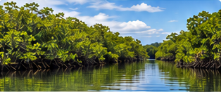

Barra de Santiago
El Complejo Barra de Santiago comprende 11,519 hectáreas de humedales costeros y constituye una importante fuente de sustento para las comunidades locales. Una estimación histórica recogida por el PNUD señala que alrededor de 3,500 personas se dedicaban regularmente a actividades pesqueras, complementadas por el turismo y el comercio de moluscos (PNUD, s. f.).
Fuente: MARN / PNUD →MARN — Superficie y contexto ambiental ↗Ramsar — Información socioeconómica ↗
Estimación histórica; no representa un censo actualizado de 2026.